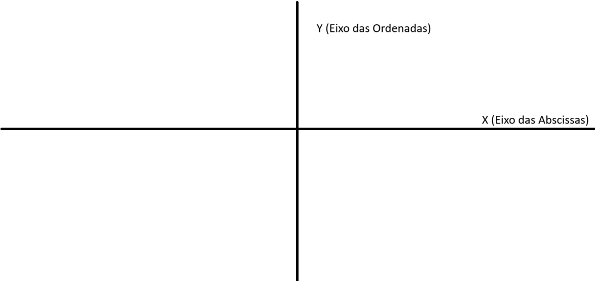
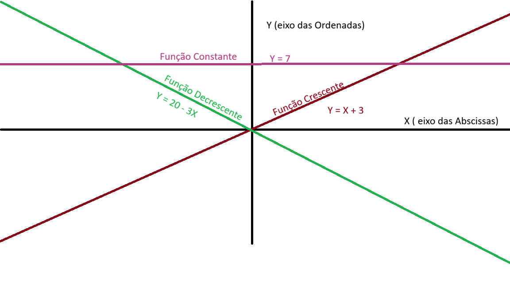
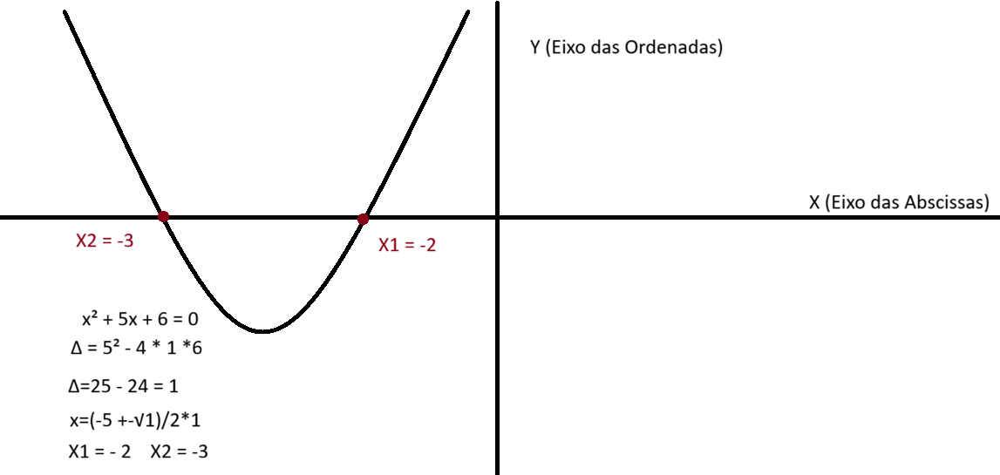

Função relacionam cada valor possivel de x para poder determinar o y correspondente. Normalmente representada por f(x) ou g(x), elas são encontradas por interpretação do problema ou por meio de gráficos.
Samuel tem uma impresa que gasta 3 reais por cada produto que ele vende, e ele vende cada produto por 5 reais. Com custo fixo de 1200 reais, a partir de quantos produtos ele começa a ter lucro? Para ter lucro L tem que ser maior que 0 (L > 0) L(x) = 5x (Valor do produto) - 3x (Valor perdido por produto) - 1200 (Gasto fixo) L(x) = 2x - 1200 É necessário interpretar que o lucro é a diferença entre o valor ganho por cada produto e o valor perdido por cada produto, e depois subtrair o gasto fixo. 2x-1200 > 0 => 2x > 1200 => x > 600 Portanto, a partir de 601 produtos ele começa a ter lucro.
Formado por dois eixos: x (horizontal) chamado de eixo das abscissas, e y (vertical) chamado de eixo das ordenadas Um ponto no plano cartesiano é representado por (x,y) Por padrão Y sempre será a variavel isolada, a variavel que queremos descobrir o valor ao substituir x.

Função crescente: quando o valor de x aumenta, o valor de y também aumenta. Exemplo: y = X + 3 Função constante: idependente do valor de x, o valor de y permanece o mesmo. Exemplo: y = 7 Função decrescente: quando o valor de x aumenta, o valor de y diminui. Exemplo: y = 20 - 3X

Função do 2º grau: é uma função polinomial de forma f(x) = ax² + bx + c, onde a, b e c são valores reais e a ≠ 0. Gráfico de uma função do 2º grau: é uma parábola que pode ser voltada para cima (se a > 0) ou para baixo (se a < 0). Vértice da parábola: é o ponto mais alto ou mais baixo da parábola, dependendo da direção em que ela está voltada. O vértice pode ser encontrado usando as fórmulas x = -b/(2a) e y = f(x). Raízes da função do 2º grau: são os valores de x para os quais f(x) = 0, ou seja y sera igual a 0. As raízes podem ser encontradas usando a fórmula de Bhaskara, elas serão os pontos em que a parabula cruza o eixo x.

para definir onde sera o pico ou o vale da parábola, é necessário analisar o valor de a. Se a for positivo, a parábola será voltada para cima e o vértice será um ponto mínimo (vale). Se a for negativo, a parábola será voltada para baixo e o vértice será um ponto máximo (pico)..